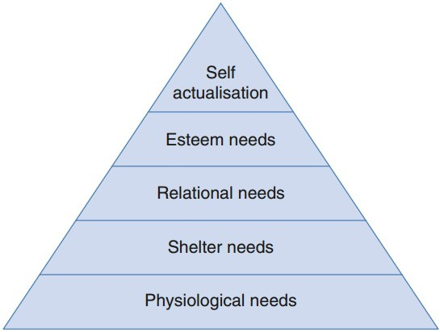
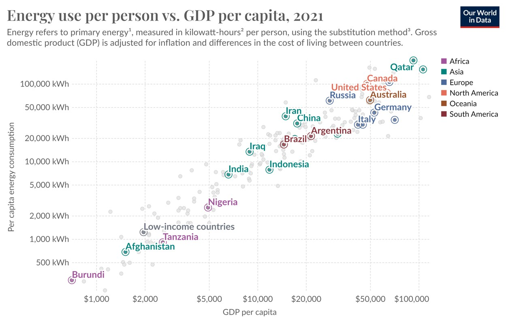
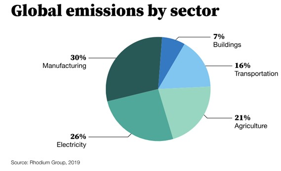
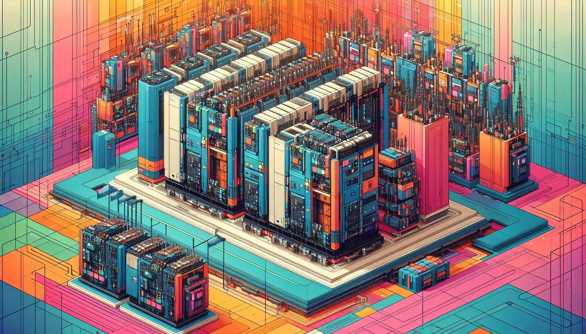
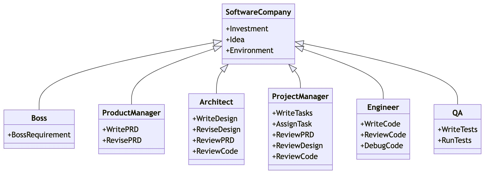
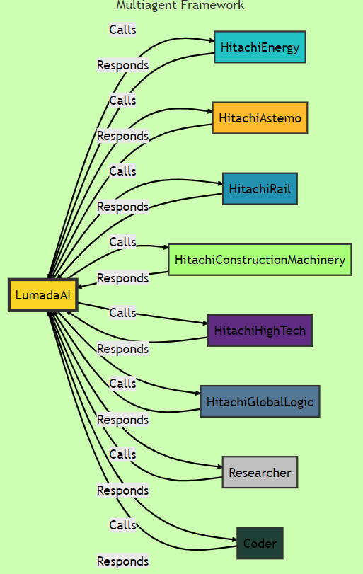

Alessandro Secchi
On a mission to discover the beauty of life and to accelerate this unprecedented energy transition towards the singularity.
"Everything is energy, and that's all there is to it. Match the frequency of the reality you want, and you cannot help but get that reality."
This website aims to be a personal experiment where I'll endeavor to collect my thoughts, reflections, experiences, and passions in a diary-style format 📔.
Thoughts..
Leadership, Motivation, Inspiration
Over the past month (August 2024), I’ve found inspiration from various sources, both privately and professionally. Inspiration to start a new chapter of my life. I’ve been reminded of the importance of certain emotions: inspiration and motivation, which are fundamental drivers for uncovering life’s mysteries and fostering innovation.
These events, along with my months spent on-site in Tanzania and my visit to Silicon Valley, have triggered some reflections that I’d like to write down to better organize my thoughts.
In “Thus Spoke Zarathustra,” the last metamorphosis of the spirit is represented by the “child,” a symbol of creativity, spontaneity, playfulness, and openness. At this stage, one begins to wonder about everything again but with a fresh perspective. What are the unresolved mysteries of life? Who does he want to be in 10 years? What is consciousness?..
"He who has a why to live can bear almost any how."
Thus, he starts exploring different aspects of his life, trying to push beyond apparent limitations. He lives multiple stories, encounters new cultures, begins new studies—driven by the desire to fill a void or bridge a gap. He is always careful to use knowledge as a means, rather than pursuing it for its own sake. Knowledge should be disinterested, not driven by a “will to power,” as it can sometimes disconnect us from the more vital, instinctual aspects of life—passion, love, and creativity.
But how can he sustain these important aspects of life? Needs can evolve into drives, which may result in motivation. In other words, to maintain motivation, we must leave some needs unfulfilled at all times.

The goal—at least for me—is to remain in the state of self-actualization: what I can be, I must be. I don’t want to stray too far, but this state acknowledges the concept of linking justice to virtue (Aristotelism). Society should not just aim to maximize welfare (utilitarianism) or respect individual rights (libertarianism); it should also promote the moral character of individuals.
I like the Maslow pyramid, as it highlights the importance of professional development and equal opportunities.
Finally, here’s a list of some quotes that often come to mind when I’m seeking inspiration. They may seem a bit trivial or loosely connected, but I believe they serve as valuable fuel for finding certain answers:
- "I think it’s possible for ordinary people to choose to be extraordinary."
- "Your time is limited, so don’t waste it living someone else’s life."
- "Everything around you that you call life was created by people no smarter than you, and you can influence it."
- "I think it’s very important to have a feedback loop, where you’re constantly thinking about what you’ve done and how you could be doing it better (together)."
- "The greater the risk, the greater the reward."
- "People don’t buy what you do; they buy why you do it."
- "It’s not important which company you work for, but which leader."
- "Most people don’t get experiences because they never ask."
I want to close this train of thought with a reflection from one of the last books I read: Outliers: The Story of Success.
Success is a story of people who were given a special opportunity to work really hard and seized it, and who happen to come of age at a time when that extraordinary effort was rewarded by the rest of society. It is a product of history, community, opportunity, and the legacy of the world in which we grew up. We need to be aware of all these variables so as to replace the arbitrary advantages with a society that provides opportunities for all.
Here are some of the sources of inspiration I mentioned earlier:
- The kickoff of my studies in management and economics.
- Training sessions with service engineers from around the world in Switzerland.
- A volleyball weekend training event with team-building activities.
Back from Anglogold commissioning in Tanzania
On my way back home, I tried to write down my reflections about the past three months in Tanzania, where we supported the partial electrification of the Geita Gold Mine.
𝐒𝐨𝐦𝐞 𝐟𝐚𝐜𝐭𝐬 𝐚𝐛𝐨𝐮𝐭 𝐭𝐡𝐞 𝐩𝐫𝐨𝐣𝐞𝐜𝐭:
🏭 The mine currently receives 40MW of power from 4 Wärtsilä diesel generators located on-site.
🔌 In 2020, the mine embarked on a grid integration project to build a 33/11kV 60MVA substation connected to the national 220/33kV grid at Mpomvu village, which will also provide power to other 130 villages in the region.
💡 Given the complex operational requirements of the process plant and the weak grid, there is a crucial need for a reliable and secure power supply. That's why a Static Synchronous Compensator is necessary to provide dynamic voltage compensation to support the 33kV bus during grid faults and to regulate its power factor.
🔋 With about 235 GWh/year of energy demand and an average CO2 emissions from the electrical grid of 0.27 kg/kwh (powered by 35% of renewable energy), this project will bring a reduction from 0,14 Mt to 0,063 Mt.
💸 The mine's annual energy expenditure will drastically decrease, with a NPV of 26 million, IIR 46% (over 10 years) and payback period of the investment in less than 2 years.
𝐒𝐢𝐧𝐜𝐞 𝐭𝐡𝐢𝐬 𝐢𝐧𝐯𝐞𝐬𝐭𝐦𝐞𝐧𝐭 𝐬𝐞𝐞𝐦𝐬 𝐬𝐨 𝐚𝐩𝐩𝐞𝐚𝐥𝐢𝐧𝐠, 𝐢𝐭 𝐦𝐚𝐝𝐞 𝐦𝐞 𝐬𝐞𝐚𝐫𝐜𝐡 𝐟𝐮𝐫𝐭𝐡𝐞𝐫:
🌎 OCSE countries are accountable for 1/3 of the C02 emissions and in the last 10 years they had a yearly reduction of about 1%.
🔥 Global Emissions continue to rise, reaching a new record of 37.4 Gt in 2023.
💸 Out of $1.8 trillion of clean energy investments in 2023, developing economies account for about 15% (and they represent roughly a third of global GDP and two-thirds of the world's population).
⛏️ Critical minerals are pivotal for the energy transition and areas like Africa owns over 40% of global reserves.
𝐈𝐧 𝐜𝐨𝐧𝐜𝐥𝐮𝐬𝐢𝐨𝐧:
🟢 I wonder if substantial investments in the electrical grids of OCSE countries is the fastest and most effective way to addressing the global climate crisis and achieving the famous net zero emissions.
🟢 Perhaps exporting cutting-edge technology and expertise to developing countries, that are in the middle of their industrial revolution, could offer a possible answer to the "hard problem" of the energy transition.
🟢 Wouldn’t it be better to reconsider (and readapt) the past approach of clean development mechanism CDM from the Kyoto protocol to valorize these investments?
...Back to my experience in Tanzania 🇹🇿. The humbleness of the people I have met and their respect for nature have thought me that this energy transition might have even more relevance in those places, where nature is still part of daily life and people know how to praise it. As they told me as soon as I arrived at Mchauru Village: “Welcome back to the reality”. 😄
🏭 Investing in developing countries could be an effective way to fight global warming. However, at the same time, we should work to reduce greenhouse gas emissions per capita in places like the US and Europe, where levels are much higher than in the rest of the world.
𝐀𝐧𝐝 𝐭𝐡𝐢𝐬 𝐦𝐢𝐠𝐡𝐭 𝐛𝐞 𝐚𝐧 𝐞𝐯𝐞𝐧 𝐛𝐢𝐠𝐠𝐞𝐫 𝐩𝐫𝐨𝐛𝐥𝐞𝐦:
💸 Direct investments in the transmission and distribution system, as well as in the ancillary services (primary and secondary markets, capacity markets, FACTS, etc.) need a clear evaluation and communication to the citizen since it might lead to substation increase in their bills.
🌄 The case of the German corridors in striking. The costs associated with transmitting high-voltage energy from wind generation in the North to consumption areas in the South amount to several tens of euros per MWh. These costs should be added to the production price at auctions (so-called "grid parity") and also include additional surcharges to maintain the quality and safety of the electrical service.
OCSE countries should take the lead in this energy transition as they can reduce the so-called green premiums by investing in new innovations.
🟢 Perhaps promoting and reviewing the concept of grid parity, which cannot solely refer to the local cost of production but must include additional costs to the electricity system. For example, nodal pricing, which redistributes some costs associated with the location and intermittency of PV production could be considered. This would foster the rise of Virtual Power Plants (VPPs), where by aggregating the interests of around a hundred households into a mini plant of a few hundred kilowatts, the cost of producing one kWh could be reduced by two-thirds (kind of car pooling but with energy ☀️).
Let me know your thoughts 😊

How to Avoid a Climate Disaster
We know that the Energy Transition is quite a complex problem, but the book “How to Avoid a Climate Disaster” helped me to grasp it in smaller and clearer solutions, which I try to summarize here:
🏭 The world typically adds 52 billion tons of greenhouse gases to the atmosphere every year.
This includes:
- 30% from “making things” (mainly cement, steel, plastic)
- 26% from “plugging in” (electricity)
- 21% from “growing things” (plants, animals)
- 16% from “getting around” (planes. Truck, cargo ships)
- 7% from “keeping warm and cool” (heating, cooling, refrigeration)
🌍 The world needs to provide more energy without releasing any greenhouse gases so the poorest can thrive.
👪 The population growth goes down as we improve health.
⚡️ Electricity demand will increase also driven by new ways of making cement and plastic.
𝐈𝐟 𝐰𝐞 𝐰𝐚𝐧𝐭 𝐭𝐨 𝐬𝐮𝐦𝐦𝐚𝐫𝐢𝐳𝐞, 𝐭𝐡𝐞 𝐩𝐚𝐭𝐡 𝐭𝐨 𝐳𝐞𝐫𝐨 𝐞𝐦𝐢𝐬𝐬𝐢𝐨𝐧𝐬 𝐜𝐨𝐮𝐥𝐝 𝐛𝐞:
🟢 Electrify every process possible and explore advanced biofuels and electrofuels (aim for zero-carbon cement, steel, fertilizer and plastic).
🟢 Get that electricity from clean energy sources (including next generation nuclear fission and nuclear fusion).
🟢 Use carbon capture to absorb remaining emissions (possibly directly from power plants, as some national agencies are already demanding).
🟢 Discuss and understand the impact of geoengineering (brightening clouds and injecting fine particles into the atmosphere).
🟢 Government policies to close the gap, as energy businesses spend an average of 0.3% on R&D compared to the 10% of IT and pharma industries.
🟢 Adopt more F-gases-free coolants
𝐀𝐥𝐥 𝐭𝐡𝐞𝐬𝐞 𝐩𝐨𝐢𝐧𝐭𝐬 𝐝𝐞𝐩𝐞𝐧𝐝 𝐨𝐧 𝐚 𝐬𝐢𝐧𝐠𝐥𝐞 𝐟𝐚𝐜𝐭: 𝐥𝐨𝐰𝐞𝐫 𝐭𝐡𝐞 𝐠𝐫𝐞𝐞𝐧 𝐩𝐫𝐞𝐦𝐢𝐮𝐦𝐬.
𝐓𝐡𝐚𝐭'𝐬 𝐰𝐡𝐲 𝐎𝐂𝐒𝐄 𝐜𝐨𝐮𝐧𝐭𝐫𝐢𝐞𝐬 𝐬𝐡𝐨𝐮𝐥𝐝 𝐭𝐚𝐤𝐞 𝐭𝐡𝐞 𝐥𝐞𝐚𝐝 𝐢𝐧 𝐭𝐡𝐢𝐬 𝐞𝐧𝐞𝐫𝐠𝐲 𝐭𝐫𝐚𝐧𝐬𝐢𝐭𝐢𝐨𝐧 𝐚𝐬 𝐭𝐡𝐞𝐲 𝐜𝐚𝐧 𝐫𝐞𝐝𝐮𝐜𝐞 𝐭𝐡𝐢𝐬 𝐝𝐢𝐟𝐟𝐞𝐫𝐞𝐧𝐜𝐞 𝐛𝐞𝐭𝐰𝐞𝐞𝐧 𝐜𝐮𝐫𝐫𝐞𝐧𝐭 𝐬𝐨𝐥𝐮𝐭𝐢𝐨𝐧𝐬 𝐚𝐧𝐝 𝐭𝐡𝐞𝐢𝐫 𝐜𝐥𝐞𝐚𝐧 𝐚𝐥𝐭𝐞𝐫𝐧𝐚𝐭𝐢𝐯𝐞𝐬 𝐛𝐲 𝐢𝐧𝐯𝐞𝐬𝐭𝐢𝐧𝐠 𝐢𝐧 𝐧𝐞𝐰 𝐢𝐧𝐧𝐨𝐯𝐚𝐭𝐢𝐨𝐧𝐬.
Let me know your thoughts 😊

AI, LLM and Energy
A few months ago, I wanted to start some AI projects to better understand its potential and see if it could really assist me.
1) Regarding foundation models (LLMs), nearly every week, there was an announcement about new, more powerful models from different companies. Sorting them out was quite straightforward:
📖 Open-source models (>70B parameters):
Llama (Meta) vs. Grok (xAI from Elon) vs. Mistral AI (largest European LLM) vs. Falcon (Abu Dhabi TII)
🔐 Private models (>70B parameters):
GPT (OpenAI/Microsoft) vs. Gemini (Google) vs. paLM (Google) vs. Claude (Anthropic) vs. Olympus (Amazon) vs. Ernie (Baidu, Inc. - China).
2) Then I started to look into open-source models that allow me to customize my application and maybe run it on my local machine.
💻So, I began exploring LLMs that can run locally, using tools like: LMStudio vs. Ollama vs. GPT4All.Of course, my laptop can only handle LLMs with <7B parameters, but for initial experiments, I thought this would be more than enough.
3) The next step was to look for basic LLM frameworks and repositories from this new AI world:
⛓ From Langchain and LlamaIndex (for Python and JavaScript) to Relevance AI and Make.com (for low-code solutions).As a good starting point, I decided to explore some pre-built open-source projects and here, I was astonished by the thousands of open-source projects publicly shared every day on GitHub and Hugging Face (the GitHub for LLMs).
4) Among them, I tried:
AutoGPT (linked with OpenAI) vs. HuggingGPT (integrated with models from Hugging Face) vs. AutoGen (a multi-agent project that supports function calling to extend the capabilities of the model by generating documents, sending emails, etc.).Testing these projects was inspiring, but I must be honest. They are still prototypes with bugs that require new daily releases.
Naturally, their closed-source counterparts are more reliable:
Azure AI Studio (a Microsoft integrated environment to develop AI agents) vs. Microsoft 365 Copilot (quite useful with Excel and Outlook) vs. OpenAI GPTs (arguably the most utilized AI playground).It's also worth mentioning AI Image and Video Generation models (DALL-E 3, Midjourney, Stable Diffusion, Sora, Runway). See the breakthrough experiment from Reid Hoffman.
5) Finally, I opted for an AI open-source IDE that allowed me to develop and connect objects (nodes and graphs). Tools like Flowwise, Langlow, but especially Rivet, are great for visualizing and building complex chains and create production-ready applications.
𝐒𝐨𝐦𝐞 𝐟𝐢𝐧𝐚𝐥 𝐫𝐞𝐟𝐥𝐞𝐜𝐭𝐢𝐨𝐧𝐬 𝐟𝐫𝐨𝐦 𝐭𝐡𝐢𝐬 𝐀𝐈 𝐣𝐨𝐮𝐫𝐧𝐞𝐲:
🟢 As of today, I don't see disruptive ideas from these AI models that could significantly change my daily life or a7
traditional company's business.
However, there is a remarkable boost in R&D and academic activities, and a huge benefit for developers who can use AI copilots to build their software or create simple websites (https://secchialessandro.github.io/).
For a company business, it would be interesting to explore solutions such as Azure AI Studio with some open source LLMs models.
🟢 We are moving towards highly specialized small agents in a multi-agent and multimodal frameworks. The new GPT-4o just leaves space to the imagination 🤯.
🟢 It is worth to mention the so called large action model "LAM" (see Rabbit r1). Check out the new open source project from Microsoft "Visualization-of-Thought (VoT) Elicits Spatial Reasoning in Large Language Models".
🟢 If you aim to use open-source LLMs, maintain the privacy of your data, and run useful applications, you could do so from your own laptop (with limited complexity) or from an internal server if you're a business.
🌟 I am convinced that we are getting closer and closer and I will spend some time to seek for opportunities between this new AI world and my passion in Energy.
Some friends have already introduced new methods to operate in the electricity market. For instance, Matteo Pisani developed a model to regulate the voltage from a load tap changer using reinforcement learning algorithms (reducing unnecessary tap movements, thus maintenance costs of the device).
"𝘛𝘰𝘸𝘢𝘳𝘥 𝘴𝘪𝘯𝘨𝘶𝘭𝘢𝘳𝘪𝘵𝘺, 𝘵𝘩𝘳𝘰𝘶𝘨𝘩 𝘵𝘩𝘦 𝘦𝘯𝘦𝘳𝘨𝘺 𝘵𝘳𝘢𝘯𝘴𝘪𝘵𝘪𝘰𝘯."

Hitachi Lumada AI
More frequently, I hear talk about highly specialized small agents in a multi-agent frameworks.
CrewAI, LangGraph, MetaGPT, LlamaIndex, Autogen are the most famous ones used in interesting application such as:
📨 Automating the process of checking new emails and creating drafts based on internal know-how.
👨💼 Replicating the structure of a software company (each agent is trained on their job profile), where from a single line requirement as input, it outputs competitive analysis, data structures, APIs, documents, software repository (see Pythagora 🤯)..

Working at one of the Hitachi companies, gave me the inspiration to build a multiagent framework to exploit the huge amount of knowledge in information technology (IT) business as well as the operational technology (OT), a special combination that only a few companies can afford.
Therefore, by looking at the Lumada concept, I tried to build an application with LangGraph, where each agent is trained on the respective company data (scraped from the website section: products and solutions)
and the supervisor (LumadaAI) can choose a specific agent (company) to perform the RAG (retrieval augmented generation) on the training data.
In addition, I have added two agents called "Researcher" and "Coder" to perform a general web search and basic data analysis calculations.

In this framework, each agent is a node in the graph, and their connections are represented as an edge. The control flow is managed by edges, and they communicate by adding to the graph's state.
With LangGraph I could create a cyclical and non-linear workflows where the agents can revisit and refine their actions based on new data, leading to more accurate and efficient outcomes.
Specialization, collaboration, flexibility and scalability are the main advantages of this kind of multi-agent systems.
This is a basic prototype and many improvements are possible:
- Improve the RAG code with a self-corrective logic (which incorporates self-reflection / self-grading on retrieved documents)
- Increase the number and quality of training data
- Add an agent trained on the customer's data
- Improve the quality of the user prompt

In the example below, I asked LumadaAI to support me in the planning, building, operating and maintaining of a new hospital.
The tool is retrieving information from Hitachi Energy, Hitachi Astemo, Hitachi HighTech, Hitachi Rail, Hitachi Construction Machinery and GlobalLogic.
🟢 I believe this kind of application can enhance the general human creativity and support many jobs by reducing the complexity of the problem, combining a huge amount of data, to come up with new products and solutions.
"𝘊𝘰𝘪𝘯𝘦𝘥 𝘧𝘳𝘰𝘮 𝘵𝘩𝘦 𝘸𝘰𝘳𝘥𝘴 "𝘪𝘭𝘭𝘶𝘮𝘪𝘯𝘢𝘵𝘦" 𝘢𝘯𝘥 "𝘥𝘢𝘵𝘢", 𝘵𝘩𝘦 𝘯𝘢𝘮𝘦 𝘓𝘶𝘮𝘢𝘥𝘢 𝘦𝘮𝘣𝘰𝘥𝘪𝘦𝘴 𝘰𝘶𝘳 𝘨𝘰𝘢𝘭 𝘰𝘧 𝘴𝘩𝘪𝘯𝘪𝘯𝘨 𝘢 𝘭𝘪𝘨𝘩𝘵 𝘰𝘯 𝘰𝘶𝘳 𝘤𝘶𝘴𝘵𝘰𝘮𝘦𝘳𝘴' 𝘥𝘢𝘵𝘢 𝘢𝘯𝘥 𝘪𝘭𝘭𝘶𝘮𝘪𝘯𝘢𝘵𝘪𝘯𝘨 𝘪𝘵 𝘪𝘯 𝘴𝘶𝘤𝘩 𝘢 𝘸𝘢𝘺 𝘵𝘩𝘢𝘵 𝘸𝘦 𝘤𝘢𝘯 𝘦𝘹𝘵𝘳𝘢𝘤𝘵 𝘯𝘦𝘸 𝘪𝘯𝘴𝘪𝘨𝘩𝘵, 𝘵𝘩𝘦𝘳𝘦𝘣𝘺 𝘳𝘦𝘴𝘰𝘭𝘷𝘪𝘯𝘨 𝘰𝘶𝘳 𝘤𝘶𝘴𝘵𝘰𝘮𝘦𝘳𝘴' 𝘣𝘶𝘴𝘪𝘯𝘦𝘴𝘴 𝘪𝘴𝘴𝘶𝘦𝘴 𝘢𝘯𝘥 𝘤𝘰𝘯𝘵𝘳𝘪𝘣𝘶𝘵𝘪𝘯𝘨 𝘵𝘰 𝘵𝘩𝘦𝘪𝘳 𝘣𝘶𝘴𝘪𝘯𝘦𝘴𝘴 𝘨𝘳𝘰𝘸𝘵𝘩."
"𝘛𝘰𝘸𝘢𝘳𝘥 𝘴𝘪𝘯𝘨𝘶𝘭𝘢𝘳𝘪𝘵𝘺, 𝘵𝘩𝘳𝘰𝘶𝘨𝘩 𝘵𝘩𝘦 𝘦𝘯𝘦𝘳𝘨𝘺 𝘵𝘳𝘢𝘯𝘴𝘪𝘵𝘪𝘰𝘯."
Experience
Control Software Engineer
I am a power electronics engineer at Hitachi Energy's Global Center of Competence in Turgi (Switzerland), working within
the business line Grid Integration, Power Quality Solutions (PGGI, GPQS). Typically, I deal with medium power converters for different applications (Rail, distribution grids, mines, offshore platforms..).
Over the last couple of years, my primary focus has been on the Static Synchronous Compensator (STATCOM), from its software
development and HIL testing to the site commissioning.
It's a cool job that allows me to take many resposabilities.
At times, I see our unit as a start-up with a hundred years of expertise.
We are about 15 control software engineers, fortunate to be deeply engaged in the whole design of these medium-power converters,
including sales support, electrical design, software development, on-site commissioning and service.
But the most interesting part is that, our solutions (NPC PCS6000 and MMC) are evolving projects following market and customer requirements. So, we
are actually part of this fantastic Energy Transition! 🌍🌿
So far, I have worked on different projects:
- Anglogld STATCOM, which will contribute to the electrification of the Geita Gold Mine in Tanzania, Africa.
- WPD Western Power Distribution STATCOM, UK.
- Draugen STATCOM for offshore platform, Norway.
- Other Static Frequency Converters (SFC) for Rail projects.
The software that we commonly used are: Matlab/Simulink, Compact Control Builder (CCB), Python (automated framework), Xviewer Yokogawa..
R&D Electrical Engineer
I worked as an R&D engineer at the automotive division of Schaffner Group. There, I designed and assembled an Electromagnetic Interference (EMI) filter for an electric hypercar 🏎️.
I had the privilege to experience the main phases of the product development before its mass production (design simulations, prototyping, testing and validation).
I was also lucky that my manager taught me the importance of leadership.. ("𝑰𝒕 𝒊𝒔 𝒏𝒐𝒕 𝒊𝒎𝒑𝒐𝒓𝒕𝒂𝒏𝒕 𝒘𝒉𝒊𝒄𝒉 𝒄𝒐𝒎𝒑𝒂𝒏𝒚 𝒚𝒐𝒖 𝒇𝒐𝒍𝒍𝒐𝒘, 𝒃𝒖𝒕 𝒘𝒉𝒊𝒄𝒉 𝒍𝒆𝒂𝒅𝒆𝒓").
After some months, the company invited me to develop a theoretical model to predict the conductive emissions within an automotive powertrain. This novel strategy was capable of simulating the common and differential mode spectrum in just a few seconds ⚡.
The main software I used at that time was LTspice for the electric circuit simulation, FEMM for core magnetic simulations, Altium for the PCB design, and other instruments such as the vector network analyzer and the impedance analyzer.
July 2021 - September 2021
Co-Founder
During the Covid period, I spent a lot of time in my room, but it was also a time when I met many interesting new people.
In fact, I became a passionate YouTube host, organizing webinars dedicated to the energy and automotive sectors.
With our student association (EMS), we successfully engaged top industries and universities, attracting over 2000 live viewers.
We had insightful discussions about the European Green Deal and hydrogen with experts like Guido Bortoni and Alessandro Clerici.
Additionally, we hosted inspiring talks with representatives from the Stellantis Group, Tesla Owners, ENEA, FAST, WEC Italy, RSE, AEIT, and ABB.
Here the Youtube channel (Italian).
Check it up!
Studies
Silicon Valley Study Tour
Networking events, company visits (Meta, Google, Apple, Cisco,Synopsys, Stanford, Pinterest, Capgemini, Uniphore) and Q&A sessions throughout the innovation ecosystem of the Bay Area, CA.
💡 Inspiring and insightful opportunity to understand the mindset among the entrepreneurs of Silicon Valley.
After the tour, I embarked on a solo trip to Los Angeles, Las Vegas, the Grand Canyon, and New York.
Those months have been truly memorable, both personally and professionaly. I guess I will write some reflections
about that genuine ambition I have experienced in SF, maybe with some thoughts about AI and Energy 🚀.
Politecnico di Milano
Main Courses in Power Electronics, Electric Power Systems, Electric Propulsion, Electrical Switching Devices, Electricity Market, Electromagnetic Compatibility.
Extra Courses in Bayesian Statistics, Project Management, Autonomous Vehicles, Quantum Physics.
Grade: 110 Summa cum laude (4 GPA) 📚🤓.
Main Projects available on GitHub: (forgive me, it's a bit messy since I have used it merely as a repository than version control)
- High-frequency modeling of an automotive powertrain for optimal EMI filter design (Master Thesis)
- Current sensor in current divider configuration for extended measurement range (Bachelor Thesis)
- Simulation of a DC motor drive for a Tram with a reference speed profile
- Field-Oriented Control of an induction motor of a train
- Direct Torque Control for a Formula E car
- AC Brushless control for Alfa Romeo induction motor
- Electrical and thermal model for a slow and fast battery charge and driving cycle of an electric vehicle
- Optimal solution to mitigate the contingencies (Correctable Emergency State) with a power Flow Analysis on Medium-Sized Systems. Focus on the effects of changes in generator, transformer, and shunt capacitor controls as well as of contingencies on the system bus voltages and transmission line flows
- Transient stability simulation software to determine critical clearing times, to look at the impact of generator losses on system frequency and to consider methods to prevent short-term voltage collapse
- Arc energy, Joule Energy, and actual (limited) current peak in the interruption of a resistive and inductive AC circuit by a limiting circuit breaker
- Bayesian learning and Monte Carlo simulation of the dataset “Ames House Price”
- Design of a residential PV plant with an energy storage system and its management strategy. Technical and economical study
- Financial analysis of the TuNur’s project: the first large utility-scale solar export project exploiting the technology of concentrated solar panels
Software: Matlab/Simulink, Femm, LTspice, R, PowerWorld, Python.
Languages: Italian (mother tongue), English (fluent C1), German (basic).
Tsinghua University
Experiencing the emerging technology in the green transformation of
China and its environmental issues through lectures, targeted field trips,
and transcultural teamwork ♻️. Final presentation about CO2 capture reuse.
There is a lot to say about this experience and my connection with China..
I guess you can see it from my side projects. Anyway, sooner or later I will write some thoughts about this too.
Technical School
Electrical specialization, final grade: 100/100.
Thesis: "Turbocor TT300 - An Examination of an Oil-Free Magnetic Bearing Centrifugal Compressor at Bormio Thermal Springs." This thesis
delved into the comprehensive electrical and hydraulic system analysis of the thermal resort in my hometown 🛁.
The insights about those thermal baths that I got thanks to my father are invaluable. This thesis is for him 👨🏫.
Also, during my studies, I spent five years at the Salesian Boarding School. Memorable years and still great sense of belonging thanks to the people I have met.
Side Projects
Siemens Digital Academy
Workshops and insights from "Casa Siemens" in Milan. We worked on the digital substation business, configuring the overcurrent Siprotec 7SJ85 protection,
testing its digital twin and sending the data to the cloud (Mindsphere) via RTU (SICAM A8000).
Really good atmosphere from Siemens' Milan environment.
Hackathons
I've always had a keen interest in the startup world, constantly exploring ways to be creative and seek out disruptive ideas. That's why I enjoyed the time spent with my geek friends during these hackathons We also managed to get good results! 🏆
- Winning the first prize at the Bosch #Restart hackathon for presenting an innovative system tailored for restaurants and bars. Video Spot and Presentation.
- First prize at the Campus Party Italy hackathon by designing a prototype of smart glasses equipped with augmented reality and face recognition technology. These glasses can potentially assist recruiters or sales managers in identifying targeted individuals. Video Spot and Press.
- Collaborating with two developers and institutional partners to create a mobile app for the mountain lodge "SunnyValley." This app provides users with optimal routes for hiking, cycling, and ski touring based on seasonal conditions, utilizing GPS tracking. The app is available on the Google Play Store and Apple App Store. Play Store and Video Spot.
Students’ representative
As a representative for students at Politecnico di Milano's Electrical Engineering department and during my time in high school, I focused on enhancing the department appeal and organizing innovative events for 400+ students with local media coverage.
ITIS' got talent is worth mentioning. It has been the first institute assembly attended by all students since many years 🏫. We introduced innovative ways of interaction where many people could show their talents.
Intercultural exchanges
“The most beautiful experience we can have is the mysterious. It is the fundamental emotion that stands at the cradle of true art and true science. Whoever does not know it and can no longer wonder, no longer marvel, is as good as dead, and his eyes are dimmed.”
I believe that our life has plenty of incredible mysteries that we can only uncover by meeting new cultures 🤝.
At just 14 years old, I embarked on a transformative journey to Malaysia, living with an Asian family.
Later, I found myself in Brighton, England, working in a traditional fish and chips, trying to pay back my summer holiday with my best friend Francesco.
Also during my studies, I have shared my accommodation with international students (from Vietnam, Poland, France, Egypt, Russia, and China).
During this time, I had the privilege of acting in a short film crafted by my talented flatmate, Yuchen, a budding director. Our collaboration earned recognition at the Macau International Short Film Festival.
(Short-Film).